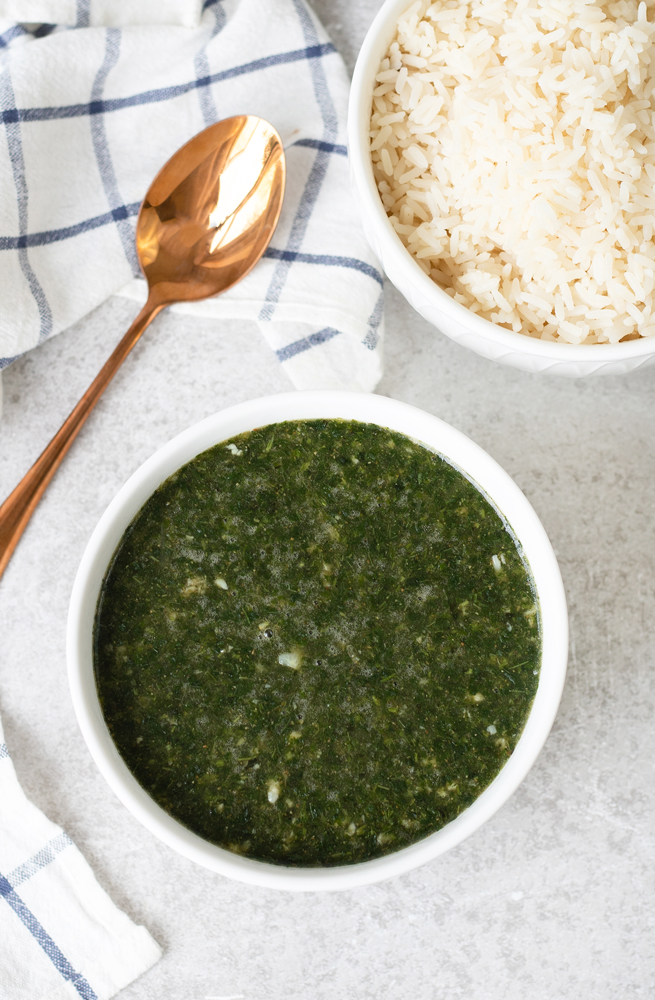

molokhia

Molokhia Soup Recipe, or the Green Soup, is an amazing Mediterranean dish made by cooking minced Jute leaves in broth. There are various ways to prepare Molokhia; today, I will prepare the most famous one, which is the Egyptian way using a homemade chicken broth.
ingredients
- Molokhia
- Cooking oil
- Garlic
- Dried coriander
- Tomato paste
directions
- In a deep pot over medium-high heat melt ghee.
- Sauté garlic for 15-30 seconds.
- Until lightly golden and fragrant as shown in picture 3.
- Add coriander and keep stirring for another 30 seconds.
- The coriander will give its fragrance and turn a little more dark brown.
- Pour in some of the broth keeping the rest after we check consistency at the end.
- Sprinkle the bouillon cube. Stir until it is dissolved.
- Add the Molokhia, and turn down the heat to medium low, keep stirring every now and then.
- Molokhia will slowly melt in the broth. Wait until it has completely melted.
- Pour in the tomato sauce and stir well.
- Check consistency of the Molokhia, It is going to be thick. If you like it that way then do not add any more broth but if you want it thinner then add broth until you reach the consistency you love.